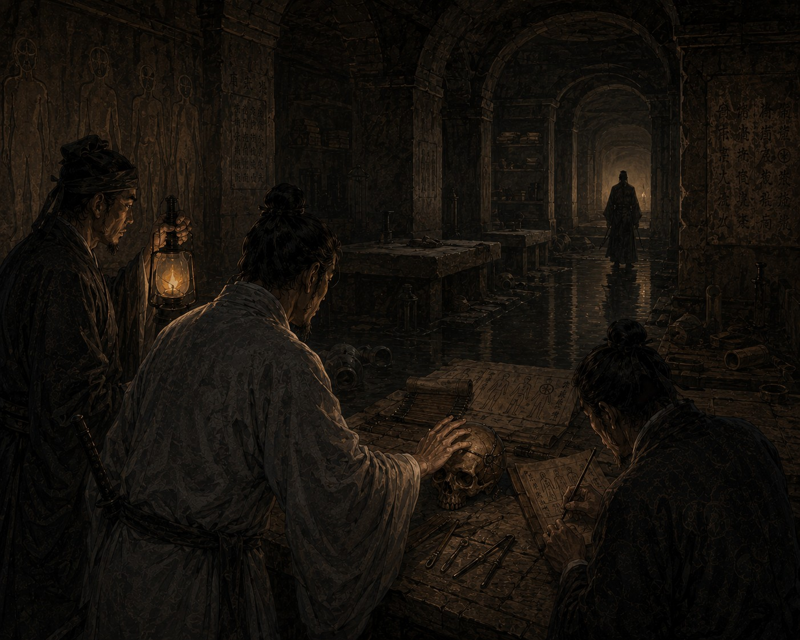

Дело о мертвых каналах

После истории с молчащим театром Управление Безупречной Гармонии оставило нас при себе. Меня, Цзяня и Ло перевели в столицу, в Цзинъань, и отвели нам казенный двор у старых ворот. Считалось, что это повышение. Мне же казалось, что нас просто решили держать поближе.
Тогда же я начал плохо спать. Сначала я принимал это за обычную усталость, потому что за последние годы узнал об Империи слишком много такого, чего предпочел бы не знать. Но сны стали повторяться.
Во сне я шел по длинному помещению, где воздух был холоднее воды в зимних каналах. Стен я не видел, я вообще никогда ничего не видел, однако точно знал, что пространство вокруг огромно. Иногда мне казалось, будто сверху льется свет. Это не было теплом огня или прикосновением солнца к коже, это было что-то сухое, неподвижное и почти невесомое. Просыпаясь, я всякий раз долго сидел в темноте и пытался понять, как слепой может тосковать по тому, чего никогда не знал.
В эти дни нам поручили новое дело. В подземных каналах под северной частью столицы начали пропадать рабочие. Несколько землекопов отказались спускаться вниз и уверяли, будто под землей слышны голоса. Один человек сошел с ума и бросился в воду. Другого нашли мертвым возле старой запечатанной галереи. Перед смертью он успел выцарапать на камне: «Они были целыми».
На постоялых дворах и рынках об исчезновениях уже говорили шепотом. Рассказывали, будто под городом лежит второй город, древний, погребенный, оставшийся со времен первых императоров Разделения.
У спуска нас встретил чиновник Министерства Каналов по имени Го, сухой и раздражительный человек.
— Работы остановлены, — сказал он. — Если слухи пойдут дальше, в городе начнется смута.
— Что нашли рабочие?
Го помедлил.
— Ничего такого, что заслуживало бы внимания Управления Безупречной Гармонии.
Люди, которые начинают разговор с подобных слов, почти всегда лгут.
Спуск в каналы находился под старым зерновым складом. Каменные ступени были влажными, воздух пах илом и железом. Внизу непрерывно шумела вода.
Сначала следовало исполнить цзянь, наблюдение. Ло шел впереди с фонарем. Цзянь то и дело останавливался и трогал стены, я слышал, как его пальцы шуршат по камню. Сам я слушал эхо.
Подземные каналы Империи строились веками. Старые тоннели соединяли с новыми, стены перекладывали, своды укрепляли, и звук в них от этого дробится и путается. Здесь же через некоторое время эхо изменилось. Наши шаги стали отдаваться слишком ровно.
Я нагнал Ло и взял его за плечо. Он остановился и поднял фонарь, я почувствовал тепло у лица.
— Что такое? — спросил он.
Я провел ладонью по стене. Камень был гладким и ровным, каким он не бывает в обычных тоннелях.
Цзянь вложил мне в руку пластинку: «Эти стены старше верхних каналов».
Мы пошли дальше. Тоннель вывел нас к бронзовой двери. Ло сказал, что ее недавно пытались вскрыть: на металле остались свежие царапины от инструментов.
— Рабочие нашли это место неделю назад, — признался Го. — После этого и начались исчезновения.
— Почему вы не сообщили сразу?
— Потому что не хотел, чтобы сюда пришли люди из вашего Управления.
Ответ был честнее большинства чиновничьих объяснений.
Ло навалился на дверь плечом, и петли заскрипели.
За дверью оказалось помещение, совсем не похожее на подземные склады Империи. Воздух там был сухим, чего под землей не бывает. Стены и пол под моей рукой были ровными и гладкими. Вдоль дальней стены, по словам Ло, стояли каменные столы, очень низкие, похожие разом на ложа, на верстаки и на жертвенники.
Ло долго молчал, а потом тихо произнес:
— Здесь работали не монахи.
Цзянь осматривал стены. Скоро я получил пластинку: «На стенах люди. Нет знаков Трех Даров».
Мне стало холодно. Во всей Империи человека изображают со знаком закрытого глаза, перечеркнутого уха или сомкнутых губ. Здесь, как пояснил Ло, были просто человеческие фигуры, без всяких знаков.
Тогда началось сы, осмысление.
Следующие несколько часов мы обходили помещения под каналами. Комнат оказалось много. Одни напоминали архивы, другие мастерские. В одной галерее Цзянь нашел бронзовые инструменты странной формы. В другой Ло нашел человеческие кости.
— Череп странный, — сказал он.
Я осторожно ощупал кость. По вискам тянулись тонкие металлические скобы. Они не походили ни на украшение, ни на след погребального обряда.
Цзянь вырезал два знака: «Голову вскрывали».
Мы помолчали. Потом Ло спросил:
— Зачем вскрывать голову мертвецу?
Ему никто не ответил. Я подумал, что человек, возможно, был еще жив.
Позже мы нашли комнату с остатками свитков. Большинство рассыпалось от прикосновения, но несколько строк удалось разобрать. Ло прочел их мне:
«Третья попытка соединения оказалась неустойчивой».
И еще:
«После возвращения чувств испытуемые начинали слышать чужие мысли».
Вот тогда я испугался по-настоящему. Подземелье хранило тайну, но в ней не было ни демонов, ни небесных знамений. Здесь работали люди, которые пытались что-то изменить в самих себе.
Я понял и то, почему чиновник Го молчал о находке. Он догадался обо всем раньше нас.
Той ночью мы остались под землей дольше остальных. Вода шумела где-то далеко внизу. Ло стоял у входа, Цзянь разбирал обрывки свитков.
Тогда я услышал шаги, очень спокойные. Кто-то шел по соседнему тоннелю.
Я дважды хлопнул Ло по плечу и показал рукой. Мы бросились на звук. Человек впереди шел уверенно, как тот, кто хорошо знает дорогу. Несколько раз я слышал шорох одежды и плеск воды. Потом тоннель расширился.
Там случилось то, чего не могло быть. На одно короткое мгновение я почувствовал чужой взгляд. Это не было звуком, дыханием или движением воздуха. На меня смотрели, и я это знал.
Я замер. Впереди стоял человек. Лица его я видеть не мог, но не сомневался, что он смотрит на нас.
— Вы опоздали на несколько столетий, господин следователь, — спокойно произнес он.
Голос был тихим и совершенно лишенным страха.
Ло увидел его в свете фонаря и бросился вперед, но человек уже уходил. Еще несколько мгновений я слышал его шаги, потом в тоннеле остался только шум воды.
Мы его не нашли. Позже, у одного из старых выходов к реке, Цзянь подобрал свежий свиток, завернутый в промасленную ткань. Ло прочел его мне:
«Разделение спасло Империю, но уничтожило человека».
На следующий день настало дуань, решение.
В отчете мы назвали подземные помещения древними водяными галереями неизвестного назначения. Большую часть найденных бумаг Управление немедленно изъяло. Кое-что Цзянь успел спрятать раньше.
Когда мы поднимались наверх, Ло впервые за много лет говорил растерянно.
— Кто это был?
Я долго молчал, слушая воду под каменными сводами, потом повернулся к нему:
— Человек, который знает о Разделении больше, чем Империя готова признать.
Уже тогда я понимал, что хуже всего не само его существование. Он не пытался от нас скрыться. Он ждал, когда мы наконец его найдем.